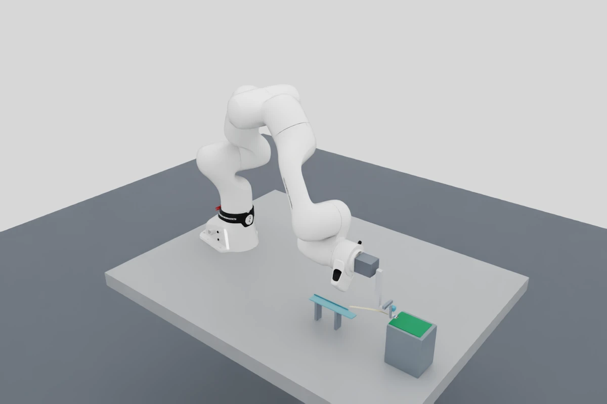

Architecture / Engineering guide
The cable assembly research system.
How the experiment works, what belongs on the real robot, and how we can teach it to act.
Explore the architecture
Design rule for all new work: cameras, tactile sensing and measured robot/tool signals drive control. Exact simulator state belongs only in offline audits. The recordings below are historical geometry checks, not learned skills.
Start with what actually works.
The robot can pick up the simulated cable, transfer it into a mechanical grasp, and put the tip into the modeled connector. We have two complete recordings of that process.
In the direct strategy, the robot keeps the cable in its tool while switching from suction to a pinch. In the fixture strategy, it lays the cable onto a raised shelf, releases suction, then returns for a mechanical regrasp. Both passed the same independent checks for grip stability and full-tip seating.
The distinction that matters for our next discussion is how the robot knows what to do. Today it reads the exact cable and tool poses from the simulator. It has not learned to find the cable in an image. The connector is an assumed clearance slot, so these successful insertions encounter no modeled terminal-spring resistance.
Physical simulation and recording
Official FR3 geometry, a flexible segmented cable, finite-force tool drives, compliant suction, contact checks, two handling strategies, source snapshots and stage videos.
A declared cable model
The selected static test agrees with an independent nominal reference within 0.11%. That checks the numerical setup for the assumed material; we still need a real cable to identify its properties.
An instrumented physical cell
Actual gripper construction, camera calibration, jaw force measurement, vacuum feedback, an instrumented PCB fixture, latch operation and electrical testing.
A policy that sees and acts
Image-based state estimation, demonstrations, imitation learning, reinforcement learning, uncertainty handling and evaluation on held-out cable and connector instances.
| Measure | Direct | Passive fixture |
|---|---|---|
| Recorded simulated duration | 41.760 s | 66.789 s |
| Recorded stages | 16 | 23 |
| Final tip depth | 3.80105 mm | 3.80099 mm |
| Maximum sampled pre-insertion grip drift | 1.32 µm | 1.93 µm |
| Independent geometric task audit | Pass | Pass |
Grip drift is checked at 10 Hz and does not bound motion between samples. These tiny simulated errors are not FR3 hardware accuracy claims. One trial per strategy gives no useful reliability ranking. See the recordings and evidence.
What a finished assembly must prove
The correct cable face enters the correct connector, reaches its specified seat, stays there while the latch closes, and remains connected after the tool withdraws. The intended circuits must pass electrical checks, with no relevant shorts or damage. Our current geometric baseline covers only part of that definition.
One task, several cooperating modules.
The system needs a clear route from observations to motion, plus a separate way to judge whether the motion worked.
The simulator already has an experiment runner, a physical scene, a stage controller and independent audits. For the real robot, we add sensors and a state estimator before the controller. A learned policy can eventually choose small actions within that structure. The fast robot controller and failure checks continue to run independently of neural-network inference.
Implemented path: privileged scene state drives a scripted controller. Select a module to inspect its contract.
Where the current implementation lives
| Module | Responsibility and handoff | Source |
|---|---|---|
| Experiment orchestration | Build the container, run numerical checks and both strategies, retain failures, return a failed status if task audits fail. | run_pipeline.sh |
| Simulator lifecycle | Freeze configuration/source, launch Kit, build the scene, advance physics, capture state, export outcomes and handle interruption. | isaac_workcell.py |
| Scene and cable | Create robot references, desk, tool, fixture, PCB, slot, cable bodies and constraints. A separate module builds the native shell comparison. | isaac_scene.py / isaac_shell.py |
| Task controller | Select stages, solve Cartesian waypoints, preserve jaw preload and check lift, grip and seating conditions. | isaac_episode.py |
| Kinematics | Read the vendor joint chain, compute forward kinematics and solve tool targets. The same chain supports independent grip reconstruction. | isaac_kinematics.py |
| Suction and contact monitoring | Create finite compliant attachments only after capture checks. Record rigid contact impulses, track peaks and abort specified collisions or overloads. | isaac_suction.py / isaac_contacts.py |
| Recording | Render two actual views, label stages, encode complete and per-stage MP4s, and keep rendering from advancing the physics clock. | isaac_recording.py |
| Independent verification | Decode media, verify hashes and timing, reconstruct tool-relative grip drift, and check every tip corner in the final scene. | check_artifacts.py, audit_grip.py, audit_seating.py |
ROS 2, an Isaac Lab training environment, a learned estimator and a real-robot driver are not part of the current runtime. Adding them is a deliberate integration task. A folder named “training” would not make the current scene ready for large-scale learning.
The bench gives every component a job.
The arm handles reach and orientation. The tool handles acquisition and retention. The fixture and cameras make the difficult part of the task observable.
Keep the insertion area accessible.
The current connector mouth is at world position (0.75, −0.18, 0.1226) m. The PCB is held rigidly with the connector at its leading edge, leaving room for the lower jaw. The passive shelf is centered at (0.55, −0.18, 0.065) m and measures 150 × 24 mm.
For hardware, make the connector coupon replaceable and provide repeatable locating features. Mount local cameras where the jaw, cable and open latch do not block the view at the moment of contact. Check all relevant arm poses with the actual tubing and cable routing installed.
Leave room for the experiment itself.
The cell also needs a regulated vacuum supply, valve, pressure sensor, actuator electronics, camera trigger or timestamp interface, and a place for the operator to intervene. The electrical test fixture needs access to the PCB contacts and to the far end of the cable.
A fixture under the PCB can measure insertion loads without carrying the gripper’s mass. Its mounting must channel those loads through the sensor. A second rigid support or taut test wire can bypass that measurement path.
Coordinate frames we should agree on before writing a policy
World frame W has z pointing up. Connector frame C sits at the slot mouth: x points into the connector, y runs across cable width, and z is the cable surface normal. Tip frame T is aligned with C when the cable is correctly oriented. Tool frame G belongs to the mechanical tool; the current tool’s axes differ from C, so their transform must remain explicit.
A rectangular tip can have the right geometric pose while its electrical contact face is wrong. Keep face polarity as a separate label, and verify it using the actual cable markings or visible contacts. Current geometric seating does not establish polarity.
Pick it up gently. Then hold it mechanically.
A cable lying flat on a desk leaves little room for a jaw underneath. Suction creates that room; the pinch provides a stable grip for transport.
The concept uses a fixed upper shoe with two suction patches and a lower jaw with two independent motions. One actuator deploys the lower jaw into position. The other closes it against the cable. Suction stays active during the handoff, then vents after the mechanical grasp is established.
What the simulator implements
Two 3 mm suction patches sit 5 mm apart along the cable. Each uses a compliant, breakable six-degree-of-freedom joint. The capture check requires a gap no larger than 0.3 mm, an in-face contact point and a surface normal within 15°. The cable anchor is projected onto the physical surface rather than left in the air gap.
The lower-jaw deployment drive has an assumed 5 N force limit; the clamp drive has a 2 N limit. The clamp spring is 600 N/m, with an intended preload of about 0.36 N from drive deflection. These are simulation settings. The approximately 18 mm measured strokes do not specify an off-the-shelf mechanism.
What the physical tool needs
Guided motion with enough clearance, replaceable soft contact faces, a jaw load measurement, position feedback and a vacuum signal that confirms acquisition. The wiring and air line need strain relief so they do not change the grip or obscure the local cameras.
The current guide rod has 3 mm clearance from the upper shoe. That change followed a failed simulation where internal contact produced a large numerical load. A geometric clearance check and tool self-contact abort now catch that failure before we mistake it for cable behavior.
The suction model, in numbers
The simulated normal and lateral translational stiffnesses are 1,000 and 300 N/m. Each attachment has a 0.0001 N·m break-torque setting, and separation beyond an assumed 1 mm seal travel stops the episode. The model does not solve airflow or cup-lip deformation.
At venting, all six drive stiffnesses, damping terms and force limits are set to zero. Cable/shoe collision stays enabled. Subsequent retention therefore has to come from the jaw contacts. The controller also preserves the existing clamp target across phase boundaries so venting does not accidentally remove preload.
Why keep both handling strategies?
Direct transfer currently needs fewer stages and is our nominal control baseline. A shelf gives us somewhere to inspect the tip, release a poor grasp or change the held length. It may help when desk pickup produces uncertain orientation, but that advantage has not been measured yet.
Use matched start conditions when comparing them: the same cable geometry, curl, face orientation, camera uncertainty and retry budget. The next useful result is a failure distribution across those conditions, not another perfectly repeated nominal video.
What the simulator represents.
The cable must bend under its own weight, interact with the jaws, and respond to contact. Each of those behaviors needs a separate check.
The selected cable model
The 150 × 8 × 0.3 mm ribbon is divided into 30 rigid segments, each 5 mm long. Compliant D6 joints connect them, so the assembly bends while retaining a defined width and thickness. The last two segments use three times the nominal joint stiffness to represent a stiffer insertion end.
The assumed mass is 0.7 g. The out-of-plane bending stiffness corresponds to a homogeneous beam with E = 3 GPa and EI = 5.4 × 10−5 N·m². The material and stiffener construction have not been identified from a physical cable.
What this model leaves out
The D6 formulation couples two swing directions, so it cannot independently reproduce arbitrary in-plane bending and torsional stiffness. It does not resolve copper traces, laminate layers, local buckling damage or electrical contact.
We also built a native surface-FEM comparison. It passed a settling/tool exercise, but its numerical sensitivity and unqualified handling mean it is not our selected full-task model. A more detailed mesh becomes useful when it reproduces measured behavior at an affordable runtime.
| Numerical setting | Selected value | Why we keep it explicit |
|---|---|---|
| Physics integration | 8 kHz / 0.125 ms | Thin contacts and compliant joints need a tested integration profile. |
| Constraint solver | PGS, 255 position / 4 velocity iterations | This profile passed the declared static check and mechanical handoff. Earlier TGS profiles did not. |
| Controller update | 1 kHz | Command timing is distinct from physics and rendering. |
| Static / dynamic friction | 0.5 / 0.4 | Assumptions to replace with pad-and-cable pull tests. |
| Contact offset | 20 µm | A numerical contact parameter, not a measured pad thickness. |
| Video / trajectory records | 30 Hz / 10 Hz | Diagnostic records; not yet a synchronized learning dataset. |
The full-length static reference test clamps the first 5 mm link. With sleeping and stabilization disabled, simulated sag is 46.081 mm against a 46.132 mm independent nonlinear-chain reference. The test uses a declared ±1% tolerance and checks the motion of the final shape. Extra body damping is allowed only in this settling benchmark, not in the handling trials.

Why a contact-force plot is not yet a physical force sensor
The rigid-contact monitor adds the magnitudes of contact impulses and divides by the actual physics timestep. It records a per-pair load proxy, not the signed six-axis wrench that a real force/torque sensor would report. It does not validate native deformable contact forces.
For future control, a simulated sensor must integrate forces through the modeled sensor mounting and report a signed, framed, timestamped signal with a measured transfer function. Passing collider identities, exact contact points or hidden cable poses to the controller would break our sensor-only design.
The connector geometry and current seating rule
The assumed slot is 8.4 mm wide, 0.5 mm high and 4 mm deep. The nominal cable is 8 mm wide and 0.3 mm thick. With a perfectly centered, unrotated tip, this leaves 0.2 mm per side and 0.1 mm above and below. Those are arithmetic clearances for the model, not drawing tolerances for a purchased connector.
The target depth is 3.8 mm. Independent acceptance checks require all four tip corners to lie inside the aperture, deeper than 3.7 mm and no deeper than 4.05 mm. The latch starts at 75° open. It is modeled as a finite driven hinge, but the current sequence does not close it or verify a connection after withdrawal.
What the ribbon cable and PCB really change.
A ribbon cable bends easily in one direction, resists others, and changes behavior near its stiffened end. A useful simulator must reproduce those differences under the loads the robot actually applies.
Start with the exact specimen.
“Ribbon cable” covers several constructions. An FFC typically has parallel flat conductors in an insulating laminate; an FPC is a patterned flexible circuit. Their material stacks and reinforced ends can differ. We should record the supplier part number, conductor layout, insulation and adhesive layers, exposed contact length, stiffener length and thickness, initial curl and which face carries the contacts. The connector’s mating thickness does not establish the thickness of every region of the cable.
There is relevant finite-element research.
Bell and colleagues model rigid-flex circuits using reduced plate models calibrated against physical dynamics. Their ribbon-cable benchmark varies mesh density and compares modal response; it demonstrates a way to identify an efficient mechanical model. It does not validate connector insertion, friction, buckling or our particular laminate. We can adopt the calibration approach without adopting its material numbers. Bell et al., 2022, finite-element modeling of rigid-flex PCBs.
Park and colleagues train FFC insertion using two camera segmentation views and end-effector orientation. Their simulated cable is a chain of thin rigid elements connected by joints. This is relevant evidence that a sensor-based insertion skill can use a reduced cable model. It is not evidence that our desk pickup, tactile handoff or latch closure is solved. Their perception and task assumptions need separate evaluation in our cell. Park et al., 2025, visual RL for FFC insertion.
Ling and colleagues combine tactile force information with a memory-based estimate of insertion state. They report eventual completion in 100 tests, with iterative corrections. That finite experiment is not a guarantee of universal reliability. The useful design lesson for us is to track evidence over time and challenge a single apparent success signal. Ling et al., 2025, memory-based FFC insertion.
Use two mechanical models with different jobs.
Offline reference model
Build a geometrically nonlinear layered-shell model of the body and stiffener, with local solids where through-thickness contact matters. Include measured initial curvature, laminate bending and twist, jaw contact and friction. Resolve connector guides and contact springs where they affect the measured load path. This proposed FEA model needs mesh convergence and physical calibration before it becomes a reference.
Training model
Fit a faster rod, shell or segmented model to the behaviors the skill encounters. Identify independent bend, twist and axial response, tip reinforcement, damping and contact response. Validate withheld poses and loads. The current equal-swing-gain chain cannot be assumed to reproduce a ribbon’s directional stiffness. We should retain it only where measurements support it.
| Bench experiment | What it identifies | Independent check |
|---|---|---|
| Cantilever bends in both directions and several free lengths | Body/stiffener bending response, initial curl and gravity response | Withheld lengths and load levels; shape error with measurement uncertainty |
| Twist, lateral bend, relaxation and repeat loading | Directional stiffness, damping, hysteresis and permanent deformation | Full trajectories, not just one final deflection |
| Jaw indentation, shear and controlled pull | Grip load, slip onset, tactile response and damage envelope | New cable surfaces and pad replacements |
| Off-axis insertion with measured forces | Tip buckling, guide friction, spring resistance and jamming modes | Unseen offsets, angles, speed and connector samples |
| PCB fixture loading and latch cycling | Mount compliance, load-path cross-talk, closure motion and wear | Alternate mounting loads, cycle counts and electrical verification |
The PCB is part of the load path.
Measure the board outline, thickness, mounting-hole positions, connector height and nearby component clearances. A stiff coupon on a short mount may be adequately rigid over our force range; a thin board on distant standoffs may bend enough to change alignment. Measure that deflection before deciding. Model the fixture and sensor compliance together, and keep harness forces from bypassing the force sensor. Detailed solder-joint stress analysis is a separate requirement if local damage becomes relevant.
Teach the connector’s actual assembly procedure.
For the FH12 bottom-contact reference, the manufacturer describes opening the actuator, inserting the cable parallel to the board with the conductive face down, then rotating the actuator closed. Partial, skewed or offset insertion is a fault. Top-contact, vertical and automatic-lock connectors require different procedures; we must freeze the exact part before implementing closure. Hirose FH12 catalog, bottom-contact operating instructions.
Our proposed skill follows that procedure with observations: inspect latch and cable face, estimate alignment, approach while monitoring contact, insert with bounded correction, confirm seating, support the cable during closure, withdraw and test. An open ZIF connector may offer very little insertion resistance. Force alone cannot prove seating, and a large force can indicate a jam rather than success.
What “realistic” will mean here
The simulator must reproduce measured cable shapes, force histories, sensor signals and failure modes within declared uncertainty over a stated operating range. Photorealistic images alone are insufficient. We do not yet have the physical measurements to call this a calibrated digital twin.
Follow the cable through every stage.
Choose a recorded stage to see what the current model does and what must replace its exact-state checks in the lab.
These videos are the historical, privileged-state baseline. The “lab evidence” descriptions define the next implementation. They must be produced by cameras and tactile or force sensors before we count a sensor-driven stage as working.
Loading recorded stage names…
Stage metadata loads from the published experiment record.
Let the cable settle
The unrecorded final stages still need to be built.
After insertion, a separate mechanism must close the latch while the cable remains supported. Then the jaw opens, the tool withdraws along a verified clear path, and cameras plus the electrical tester check the result. If the cable moves out during release, the episode fails even if it was seated a moment earlier.
Build perception around what we can measure.
A camera tells us where the tip appears to be. Touch tells us whether we are holding it, slipping, or pushing into something.
All new control uses a common observation packet built from real sensor channels. The simulation must imitate those channels at plausible rates, with their actual mounting transforms and uncertainty. The policy gets neither exact cable coordinates nor a contact-state answer from the physics engine.
Use three camera views with different jobs.
| View | What it needs to resolve | First implementation |
|---|---|---|
| Global, above the desk | The cable mask, separated endpoints, pickup patch, face cues and whether the cable is lifted. | A fixed calibrated RGB camera and controlled diffuse lighting. Start with one isolated cable against a consistent surface. Add segmentation and endpoint detection with a confidence estimate. |
| Local top or oblique view | Tip position across the slot, yaw, exposed length and contact-face markings. | A fixed macro camera near the PCB. Detect the slot and both cable edges in the same view to reduce dependence on absolute robot calibration. |
| Local side view | Tip height, pitch, downward curl and buckling during approach. | A second macro view with unobstructed sight of the mouth. Jointly fit tip pose with the top view and report the uncertainty that remains. |
A Basler a2A1920-160umBAS is a concrete local-camera candidate: its documentation describes a monochrome global-shutter USB 3 camera with a 1920 × 1200 default image and triggering support. Use a color global view if face markings need color. Choose lens, working distance, depth of field and illumination together, after a physical visibility mockup. The model number alone does not determine measurement accuracy. Basler specifications.
How much of the slot survives the image?
Calculated sampling scale
10.4 µm / pixel
The modeled 0.1 mm vertical half-clearance spans about 9.6 pixels at this scale.
Illustrative geometry only. Distortion, focus, calibration error and occlusion can dominate. The calculation applies to an axis with this field of view; a real side camera needs its own calibration.
If a training pipeline shrinks a 20 mm-wide scene to 240 pixels, each pixel covers about 83 µm. That is a large fraction of our nominal vertical clearance. Preserve a high-resolution local measurement path or carefully designed crops. A global image resized for a neural encoder is not automatically a sufficient insertion sensor.
Make tactile sensing part of the first gripper.
The required tactile role is to detect contact establishment, asymmetric loading and slip during handoff and transport. A scalar jaw load cell is useful, but it cannot by itself recover a contact distribution or explain shear motion. We should record a richer tactile signal alongside calibrated jaw load.
Preferred candidate to evaluate: AnySkin
AnySkin uses a replaceable magnetic skin and five three-axis magnetometers. It offers a compact raw signal for learning contact and slip features. We would evaluate it on an upper contact pad, while retaining a separate measurement of normal jaw load. Its documented capabilities are a reason to test it, not evidence that it already works for our ribbon cable. Project and hardware.
The first bench tests must include the actual servo running through its positions, because motor fields and nearby ferromagnetic parts may corrupt the signal. Measure no-contact drift, then repeat known normal presses and tangential pulls at several cable locations. Fit contact/slip features against those measurements.
Optical alternative: a camera-based tactile finger
A GelSight-style sensor images deformation of a compliant pad. It can provide a contact image and marker motion useful for slip estimation. A commercial sensor body may be too bulky near this connector; check the housing, pad and optical path in CAD before selecting it. GelSight robotics interface.
We must redesign the contact shoe around whichever sensor fits. Adding a sensor changes friction, pad compliance, held cable length and collision clearance. The old tool’s successful video does not qualify that new gripper. If a suitable tactile finger is unavailable next week, keep work at the bench until the required sensing is ready.
A realistic tactile simulation needs measured data.
Isaac rigid-contact impulses are not an AnySkin signal or a GelSight image. For magnetic sensing, fit a forward model from physical indentation, shear and temperature measurements. For optical sensing, identify the pad’s deformation and imaging response. Until that is credible, train tactile features on real bench data and use simulated contact only for offline analysis.
Force, pressure and timestamps complete the picture
A PCB-mounted six-axis sensor measures the signed insertion wrench. A local jaw load cell measures clamp force. A pressure sensor near the pickup head observes vacuum acquisition and loss; a valve command alone does not establish a seal. Encoders report jaw position, while FR3 state supplies joint positions and other robot measurements.
Give every sample a capture timestamp, receive timestamp, coordinate frame, calibration ID and validity flag. Trigger cameras together where possible; otherwise characterize their offsets and jitter. Synchronize against a common clock or a measured hardware event. The policy must receive the age of each observation and enter a hold or retreat behavior when essential data is stale.
The hardware list, with reasons.
FR3 is the selected arm. The rest of the cell should be sized around the cable, the connector and the forces we measure on the bench.
The entries below are design selections or candidates, not purchased equipment or a final BOM. The earlier budget ceiling was set aside when we selected FR3. We still need part availability, drawings and physical fit checks before committing to fabrication.
Robot, motion computer and tool drives
| Component | Role and current decision | Before installation |
|---|---|---|
| Franka Research 3 + FCI | Selected research platform. Use a local real-time motion process connected through the supported Franka interface. | Verify the delivered robot, FCI entitlement, firmware and libfranka compatibility. Calibrate the actual tool/load and mounting. |
| Real-time control computer | Dedicated local controller process and reliable wired robot network. Keep GPU inference, video encoding and disk writes outside the real-time callback. | Validate latency and scheduling on the chosen supported OS/kernel. The Isaac Docker host is not automatically a qualified robot-control host. |
| Two guided tool axes | Independent jaw deployment and normal clamping. The simulator uses ideal prismatic guides; the real tool needs bearings or flexures and a designed transmission. | Size stroke, load, backdrive behavior, hard stops and cable clearance from CAD and bench tests. |
| ROBOTIS XC330-M288-T | Initial small-actuator candidate for a linkage or screw-driven prototype. Integrated feedback and current-based modes are useful for development. | Verify torque-speed behavior at the intended supply and duty cycle. Motor current is not a calibrated fingertip force measurement. Official manual. |
| Jaw-force measurement + I/O controller | A sensor in the actual clamp load path, digitized locally, with jaw encoders/limits and a watchdog for stale commands. | Measure zero drift, hysteresis, cable pull response, overload behavior and the bandwidth of the complete sensor chain. |
Franka documents state delivery at 1 kHz and requirements on control commands. That is a hardware-interface capability, distinct from the assumed 1 kHz servo in our simulation. FCI interface · Command limits.
Contact sensing, vacuum and the connector station
| Component | Role and current decision | Before installation |
|---|---|---|
| Tactile finger | Required sensing role. Evaluate an AnySkin contact pad first; compare an optical tactile finger if geometry or magnetic interference rules it out. | Confirm physical fit, pad contact pattern and useful slip signal on the actual FFC. Revalidate tool clearance after integration. |
| Vacuum source, regulator, valve, pressure sensor | Generate and switch vacuum, measure whether a seal forms, and vent without dragging the cable. | Select cup geometry and flow from pickup tests. Log valve delay, pressure response and release delay. Keep tubing forces out of the grasp. |
| ATI Nano17 at a lightweight PCB coupon | A candidate for local six-axis insertion metrology. A fixture mount avoids loading it with the entire gripper. | Check the chosen calibration, combined loads and moment arms. The SI-12-0.12 calibration lists ±12 N lateral, ±17 N axial and ±0.12 N·m torque ranges. ATI data. |
| Known cable + connector pair | Hirose FH12-15S-0.5SH(55) remains a reference candidate: 15 contacts, 0.5 mm pitch and 0.3 mm specified cable thickness. | Match contact face, pitch, conductor count, width, exposed length and stiffener construction. Use the exact drawing and samples. Hirose product. |
| Replaceable PCB coupons | Rigid, repeatably located connector boards with accessible test points and logged mating-cycle count. | The reference connector lists 20 mating/unmating cycles. Plan replacements and do not treat hundreds of cycles on one connector as independent fresh-part trials. |
| Latch actuator and electrical tester | A separate guided latch pusher or station that can close the latch while the cable stays supported, plus a tester for continuity and relevant shorts. | Measure latch trajectory and torque. Design the electrical return path through the far cable end; software cannot test an inaccessible open circuit. |
Optics, infrastructure and spare parts
Plan for the global camera, two local cameras, appropriate lenses, stable mounts, diffuse illumination, optional polarizers, calibration targets and trigger cabling. Add the tactile interface board, force-sensor acquisition hardware, regulated actuator power, vacuum fittings, strain relief, spare pads and a protected wiring route.
The local simulation machine has an RTX 5080 with 16 GB of VRAM. It is a useful starting point for perception and small-policy experiments. Model size, image resolution and batch length still need profiling. Do not assume it can train a large VLA or run thousands of flexible-cable environments in parallel.
Include an operator stop device and a documented test envelope in the physical cell. Reset fixtures, replaceable cable samples and known-good/known-bad electrical specimens are part of the experimental equipment, not items to add after training starts.
The clamp force should come from a measured force-versus-slip-and-damage experiment. A powerful geared motor can make low-force control harder. We should size the mechanism to resolve the useful force range and measure actual jaw load, rather than using the motor’s stall torque as a grip specification.
A skill needs a way to notice trouble.
Each stage gets a goal, an observation-based completion rule, a timeout and a recovery action. A hidden tip coordinate never decides that the stage succeeded.
| Skill | Evidence to advance | If uncertain or failing |
|---|---|---|
| Find and approach | Visible cable endpoint, face and grasp patch; calibrated image confidence | Reobserve from a permitted viewpoint; reject ambiguous overlap or occlusion |
| Suction pickup | Pressure change plus visible lift and retention over time | Return to a supported position; release and retry within the attempt budget |
| Mechanical handoff | Jaw load and tactile contact; no observed slip during a small retention check | Keep suction until the grasp is supported; avoid venting on jaw position alone |
| Align and insert | Local images, calibrated uncertainty, signed force and tactile history | Stop forward progress; execute a bounded retreat and reobserve before correction |
| Close and release | Visible seat and latch, acceptable closure response, electrical checks after withdrawal | Classify partial insertion, latch fault or electrical fault; record the failed attempt |
Keep a belief about contact, not a single guess.
The same force spike can come from an edge collision, cable buckling or a tilted board. The estimator should combine recent images, tactile changes, wrench, jaw load and the last commanded motions. It can represent likely states such as free, one-edge contact, sliding, jammed or seated, with uncertainty. If the views disagree, the next action may be to gather information.
Separate the fast controller from the learned policy.
A planning target is 20 Hz policy updates, 30 to 60 Hz cameras, tactile sampling fast enough to resolve measured slip transients, and a local robot-control loop using the supported Franka interface. These are design targets to profile, not achieved rates. Disk writing, inference and remote access stay outside the real-time callback. The local supervisor checks observation age, action bounds, joint/workspace limits and measured loads.
Actions begin as small tool-frame translation/rotation increments, jaw targets and vacuum requests. Record the reference frame, units, command duration and both requested and executed action. Define a supported recovery for each stage: blindly opening the jaws or venting after a timeout could drop the cable.
First implementation now tested
The new vector observation gate rejects unknown channels, extra fields, invalid values, stale or future timestamps, reordered data and excessive sensor skew. Its output is immutable. It is a transport prototype, not a controller; camera transport and Isaac integration remain the next step. Milestones and exact implementation limits.
Record what the robot could actually know.
A training dataset is a synchronized account of observations, decisions and outcomes. A rendered video with stage labels is not enough.
Save raw images from calibrated global and local cameras without debug text. Camera mounts can be fixed to the desk or rigidly attached to the wrist, with poses derived from measured robot kinematics. The historical virtual camera that follows the exact tool target must not become a training view.
| Stream | Required record |
|---|---|
| Camera | Capture timestamp, frame sequence, intrinsics, distortion, exposure, mount calibration and clean pixel data |
| Tactile and force | Raw samples, calibration/version, zero baseline, units, frame, filtering and sample validity |
| Robot and tool | Measured joints, tool pose derived from joints, jaw position/load, vacuum pressure and device health |
| Actions | Policy request, supervisor changes, executed command, duration, reference frame and intervention events |
| Outcome | Observed stage result, retries, termination reason, electrical result and inspection record |
| Offline audit | Simulator truth in a separate artifact, unavailable to policy, critic and live stage supervisor |
Split data by entire episode and physical specimen, with a final held-out group of cable and connector instances. Adjacent frames from one run cannot be divided between training and evaluation. Keep calibration sessions, connector wear and human interventions traceable. The existing 10 Hz trajectory logs are suitable for their declared audits, not for reconstructing fast tactile control.
Begin with demonstrations of one skill.
Our first learning problem should be small enough to diagnose: hold a cable securely, observe its end and insert it into a known open connector.
Imitation learning
Collect successful and corrective sensor-driven demonstrations. Start with behavior cloning and compare an action-chunk model using images, tactile history and robot measurements. Check whether it recovers from small offsets instead of merely replaying a path. ACT research.
Diffusion policy
Compare a conditional action-sequence model on the same data and test set. Measure inference delay and task success, including difficult contact cases. The more complex model earns its place only if it improves the experiment. Diffusion Policy research.
Residual RL
Learn bounded corrections around a sensor-driven controller. Use demonstrations and supervised interventions, with a sensor-conditioned critic and independent success verification. HIL-SERL research is a useful reference for physical learning with interventions.
Where a vision-language-action model belongs
A VLA may help choose between assembly tasks, understand instructions or generalize across objects. It is optional for one cable and connector. The contact controller still needs timely visual and tactile evidence, calibrated actuators and a tested recovery envelope. We should compare it later against a smaller policy rather than assume language reasoning supplies submillimeter contact control. OpenVLA project.
“End to end” means the completed system can handle the whole assembly. We can train individual skills first and later learn their coordination. Physical limits and observation-health checks continue to apply whichever policy we use.
Make the curriculum reveal failures early.
- Perception without motion. Label cable edges, endpoint, face and connector mouth in held-out camera images. Measure error and confidence under glare and occlusion.
- Grasp retention. Begin with supported samples. Learn contact and slip from real tactile recordings before trusting a tactile simulator.
- Local alignment. Start from a secure grasp near an open connector. Increase lateral and angular offsets within measured limits.
- Contact and recovery. Include edge catches, shallow insertion, buckling and lost visual coverage. Reward recovery only when observed evidence supports it.
- Whole-task composition. Add desk pickup, transfer, latch operation and withdrawal after each component passes its own gate.
Both actor and critic receive deployable observations and their history. Future demonstrations must also use sensor feedback. Privileged simulator state remains isolated for offline evaluation. Training rewards should use observable progress and independently checked outcomes; the simulator’s true insertion depth is not a reward shortcut in this design.
The current simulator has no electrical contact model. Until we validate one, simulated geometric seating cannot earn an “electrically complete assembly” reward. Train the relevant subskill and reserve full assembly success for the physical test circuit. Test any learned success classifier on deliberately bad assemblies before it supplies rewards.
Randomize measured uncertainty.
Vary cable curl and stiffness, friction, grip placement, connector pose, lighting, calibration error, sensor bias, latency and dropped readings within justified ranges. Preserve correlations: a thicker laminate affects mass, bending and mating clearance together. Randomization should expose plausible variation; it cannot repair a missing contact spring or an impossible tactile signal.
The selected 8 kHz, 255-position-iteration benchmark is expensive. Profile it before choosing rollout counts. Use reference FEA offline and qualify a faster model for training. Isaac Lab can organize the environment, observations, actions and curriculum, but it is not yet installed or integrated here. Pin a compatible version before use. Isaac Lab task workflows.
Build one verified capability at a time.
Each milestone ends with evidence we can inspect. If it fails, we fix that layer before adding another skill.
0 / Establish the observation boundary
Implemented: vector ingress prototype and fault-injection tests. Historical pipeline requires an explicit baseline flag. No new oracle handling run was launched.
Current result: 42 software tests pass. Camera ingress and process isolation remain unimplemented.
1 / Produce trustworthy sensor recordings
Fix camera mounts, add timestamped raw image and DAQ adapters, isolate the controller process and audit all observation producers.
Exit: recorded/replayed packets pass timing tests; missing frames stop progression; changing hidden truth while replaying the same observations cannot change policy output.
2 / Identify cable, contact and sensor models
Measure actual specimens and calibrate the reference mechanics, reduced simulator and tactile/pressure/wrench forward models.
Exit: held-out shapes and force/sensor histories match a declared tolerance derived from measurement uncertainty and task clearance.
3 / Qualify pickup and handoff
Evaluate vision-based pickup, pressure confirmation, tactile grip and controlled venting. Compare direct handling and the passive fixture under matched initial conditions.
Exit: all attempts, slips and retries reported; repeatable retention without unacceptable specimen damage.
4 / Qualify insertion and completed assembly
Add local visual alignment, contact recovery, supported latch closure and electrical testing after withdrawal.
Exit: partial insertions and jammed cables cannot pass; the assembled connection passes the predefined circuit tests.
5 / Train and compare
Collect sensor-driven demonstrations, train imitation baselines and consider bounded RL only after evaluation identifies a useful gap.
Exit: improvement on held-out specimens and perturbations, with confidence intervals and failure analysis.
A practical first week in the lab
Day 1: freeze the cable/connector pair, inspect fit and establish the test circuit. Day 2: calibrate optics and record force, tactile and vacuum bench data. Day 3: attempt bounded pickup and retention tests. Day 4: evaluate pregrasped local alignment and contact behavior. Day 5: attempt a short composed sequence only if its component gates passed. This is an order of work, not a promise that procurement, tooling and calibration fit into five days.
If a tactile pad or connector coupon is unavailable, continue characterization and perception work. Do not substitute a hidden simulator signal and call the missing hardware gate complete.
Count the failures as carefully as the successes.
Report first-attempt success separately from eventual success after retries. Include timeouts, aborted pickups, human interventions, damaged cables and false seating detections in the attempt count. Show task time and peak measured loads alongside success rate. Keep direct and fixture comparisons matched for cable pose, curl, wear and camera conditions.
| Layer | Evaluation |
|---|---|
| Numerical mechanics | Mesh and time-step sensitivity, energy behavior and independent reference comparisons |
| Physical mechanics | Held-out measured shapes, force-displacement curves and transient response with uncertainty |
| Perception | Endpoint/face errors, confidence calibration, failure to reject occlusion and temporal tracking |
| Contact sensing | Slip detection latency, false alarms, drift, pad replacement and motor interference |
| Skill | Success per attempt, recovery count, damage, intervention and action latency |
| Full assembly | Correct face, closure, retention after withdrawal and continuity/short tests |
Use episode-level confidence intervals and report sample counts. Repeated trials on one worn connector are not independent evidence of generalization. Reserve untouched specimens and perturbation combinations for final evaluation. Ablate tactile input, local views and memory to find which components actually help.
Every milestone should publish its configuration, calibration identifiers, software revision, clean sensor recording, annotated review video and a machine-readable report. Label unavailable measurements “not evaluated.” The existing stage videos remain linked below as historical geometric evidence.
The decisions that move us forward.
Which exact cable and connector will arrive in the lab?
We need matched drawings and samples, contact-face orientation, stiffener specification and spare connector coupons. FH12 is a reference candidate, not a finalized purchase.
Can the tactile pad fit without blocking insertion?
Place the real pad, jaw guide, suction ports and camera sightlines in CAD. Test cable contact area and signal quality on the bench, including actuator magnetic interference.
Where does the electrical test circuit close?
Provide access to the far cable end and the PCB contacts. Specify which conductors and short combinations are checked, along with tester self-tests.
What measurements define acceptable contact?
Determine grip force, insertion envelope and permitted deformation from specimens and supplier requirements. The existing simulation thresholds are not hardware limits.
When does the fixture earn its place?
Choose after a matched sensor-driven comparison of orientation coverage, grasp retention, retries, cycle time and damage. The current two deterministic runs cannot decide this.
A few terms, in plain language.
- FFC / FPC
- Flexible flat cable / flexible printed circuit. Similar appearance does not imply the same material stack or mating specification.
- FEA / FEM
- Finite-element analysis / model. A discretized mechanical calculation whose accuracy depends on geometry, material data, boundary conditions and validation.
- D6 joint
- A joint with configurable constraints and drives across six relative motion axes. Used here to connect cable segments.
- Privileged state
- Information available inside simulation that the deployed robot cannot directly measure, such as every cable vertex or a true hidden tip pose.
- Belief state
- An estimate of what is happening, including uncertainty, built from observations and recent actions.
- Domain randomization
- Varying plausible conditions during training so the policy cannot depend on one exact simulated setup.
- Behavior cloning
- Learning actions from demonstrations. Its quality depends on coverage of both normal execution and recovery.
- Residual RL
- Learning limited corrections around an existing controller through rewards and interaction.
Read the evidence behind the design.
Primary research and manufacturer references are linked next to the claims they support throughout this guide. These additional project records describe exactly what was run and what remains assumed.
- Sensor-driven milestones
Current ingress prototype, test scope and the next executable increment.
- Calibration record
Numerical assumptions and outstanding physical measurements.
- Isaac implementation
Container, model, execution and artifact details.
- Experiment recordings
Historical direct and fixture runs with independent audits.